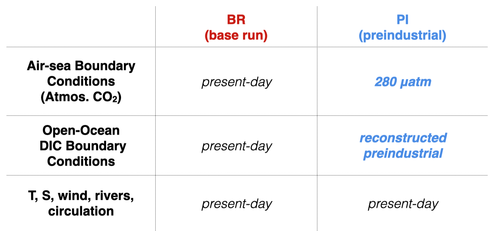
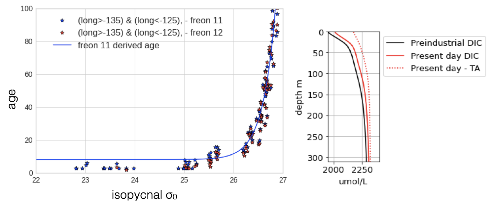
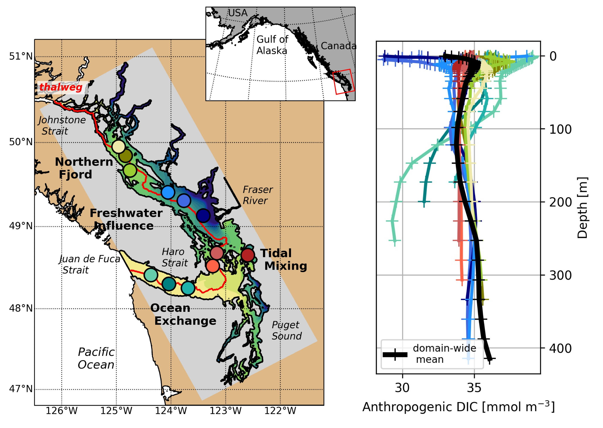
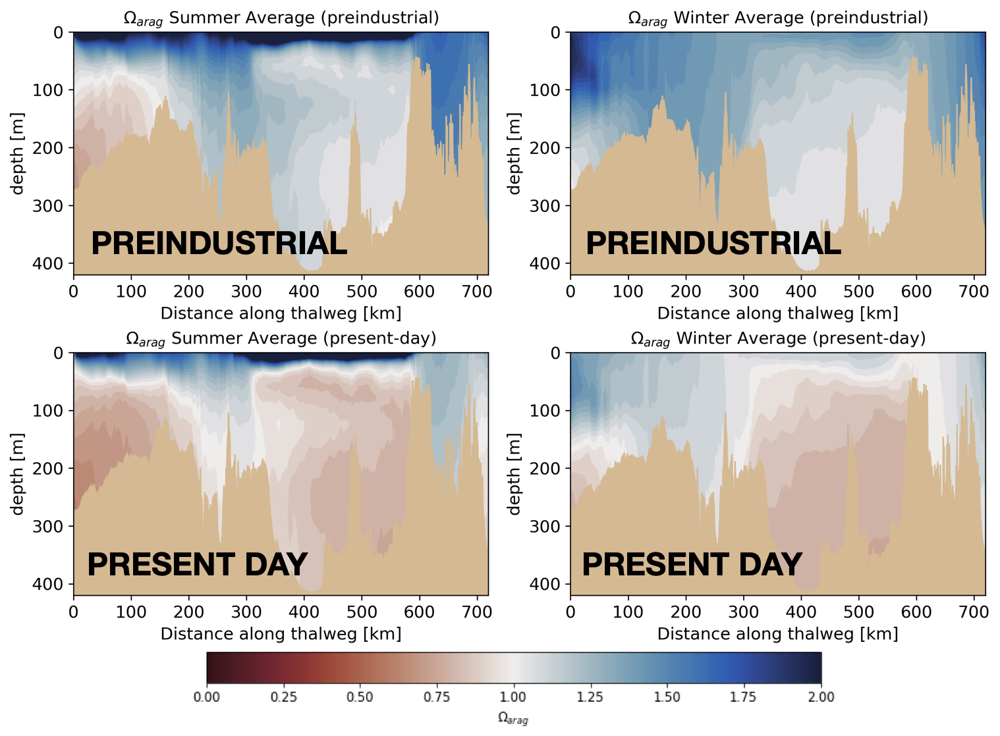
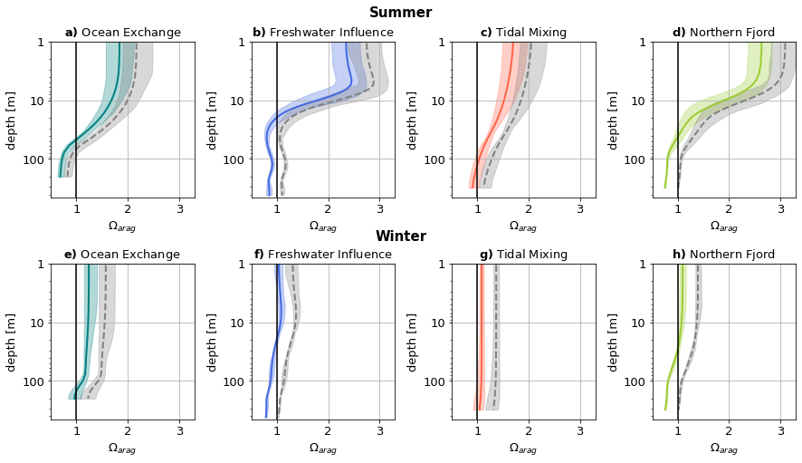
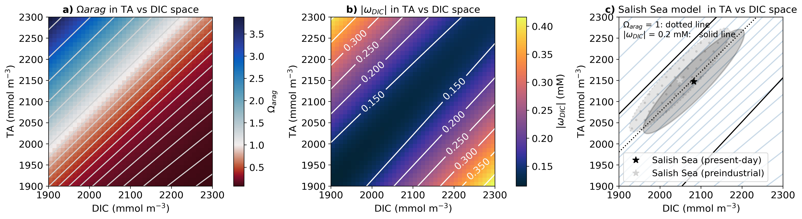
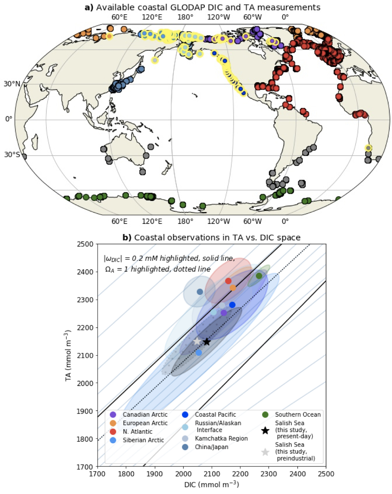
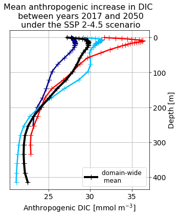

class: center, middle # Where Does the Extra Carbon go? <br/> Dominant Impacts of Anthropogenically Modified Carbonate Chemistry in a Coastal Pacific System .author[Tereza Jarníková$^{1}$, Debby Ianson$^{2}$, Susan E. Allen$^{3}$, Andrew E. Shao$^{4}$, Elise M. Olson$^{5}$]<br/> .date[5th International Symposium on the Ocean in a High CO$_2$ World] <br/> .date[September 16, 2022] .note[1- University of British Columbia, Canada (now at University of East Anglia, United Kingdom) <br/> 2- University of British Columbia and Department of Fisheries and Oceans, Canada <br/> 3- University of British Columbia <br/> 4 - Canadian Centre for Climate Modelling and Analysis (now at Hewlett Packard Enterprise, USA) <br/> 5 - University of British Columbia, Canada (now at Princeton University, USA) ] --- class: center <br/> #Complex carbon on the coastal margin… <br/> <img style="width:90%" src="./FIGS_ORGANIZED/2022SEP_SIMPOSIO/ssiss.png"><br/> The atmospheric concentration of carbon dioxide has increased <br/> from 280 μatm to over 400 μatm in the past 150 years. -- How does this change impact the coastal Pacific rim, and what effects does it have on coastal carbonate chemistry? --- class: center <br/> # The study system - the Salish Sea .left-column[ ] .right-column[ - Semi-enclosed fjord system (limited exchange)<br/> - Large range in pH <br/> - Lower surface pH than global average <br/> - Relatively well sampled (good region for model evaluation)<br/> - Carbon-enriched: <br/><br/> <img style="width:90%" src="./FIGS_ORGANIZED/2022SEP_SIMPOSIO/dicspace.png"> ] --- name: tools2 class: center ## Constructing a Submesoscale <br/>Carbonate Chemistry Model: SalishSeaCast .left-column[<img style="width:100%" src="./figures/carbonatemodel.png">] .right-column[- 3D stratified model, based on NEMO 3.6 - Horizontal grid spacing: about 500 m - Vertical grid spacing: 1 m (near surface) to 27 m - Tides: 8 tidal constituents at open boundaries - Freshwater: Fraser + 150 climatology-based rivers - Winds/Meteorology: 2.5 km & hourly from Environment Canada - SMELT Biological model (3N 3P 3D 2Z) - Carbon:Explicit resolution of dissolved inorganic carbon and total alkalinity ] --- name: tools class: center ##Model Evaluation <img style="width:80%" src="./figures/FIG_CG_02_modeval.jpeg"> Our model represents DIC, TA, and $\Omega_{arag}$ in the Salish Sea with high fidelity accross different regions and depths. --- name: tools class: center ##Model Evaluation <br/><br/><br/> <img style="width:60%" src="./figures/modeval_met.png"> <br/><br/> Our model represents DIC, TA, and $\Omega_{arag}$ in the Salish Sea with high fidelity accross different regions and depths. --- name: tools class: center <br/> ##Experimental Design <br/>  --- name: tools class: center <br/> ##Setting the Atmospheric Boundary Condition <br/><br/> <img style="width:100%" src="./figures/atmos.png"> The model seasonal atmospheric CO$_2$ cycle is initialized with averaged observations from La Jolla and Pt. Barrow <br/><br/> -- In the preindustrial simulation, the mean atmospheric CO$_2$ is 280$\mu$atm, and the seasonal cycle is unchanged. --- name: tools class: center <br/> ##Setting the Lateral Boundary Condition <br/><br/>  -- To estimate the anthropogenic intrusion, we need to know the age of the water, which we estimate from local cfc-freon-11 observations <br/><br/> -- We can then calculate the DIC intrusion using <br/> the [{Gruber et al., 1996}](https://agupubs.onlinelibrary.wiley.com/doi/10.1029/96GB01608) method. --- name: increase class: center ##Results: The Anthropogenic Carbon Increase  -- On average, DIC has increased by 29-39 mmol m$^{-3}$ in the Salish Sea, a modest increase in a global context. --- name: tools class: center ##Results: The Effects on $\Omega_{arag}$  -- <br/><br/> However, the effects of this increase are dramatic: since the pre-industrial era, the Salish Sea has shifted to majority aragonite undersaturation by volume in all seasons. --- name: tools class: center ##Results: The Effects on $\Omega_{arag}$ <br/><br/>  -- Modern aragonite saturation conditions (shown in colour), though variable, are typically outside of the range of pre-industrial values (shown in gray) throughout the domain. --- name: tools class: center ##Why are the effects on $\Omega_{arag}$ so dramatic? <br/><br/>  -- <br/><br/><br/><br/> Both the pre-industrial and the present-day Salish Sea occupy the poorly-buffered, low aragonite portion of the TA vs. DIC space, and the center of the distribution shifts to below the $\Omega_{arag}$ = 1 line from the pre-industrial to the present-day case. --- name: tools class: center # Carbonate Chemistry in the Global Coastal Ocean  Carbonate chemistry conditions similar to those in the Salish Sea <br/>are common throughout the Pacific Rim. --- class: center # New Paper: <br/><br/> <br/> <br/> --- name: tools2 class: center # Post-script: A projected near-future carbon increase I estimate the future DIC intrusion by year 2050, using SSP 2-4.5,<br/> a conservative (low) emissions scenario. <br/> <br/> -- <br/> -- Remarkably, the projected increase over the next thirty years represents approximately 80$\%$ of the total inorganic carbon increase from the pre-industrial period to year 2015! --- class: center <br/> #Thank you! <br/> <br/> <br/> .date[Tell me your thoughts on anything!]<br/> .date[T.Jarnikova@uea.ac.uk, @tjarnikova on Twitter]<br/> <br/>